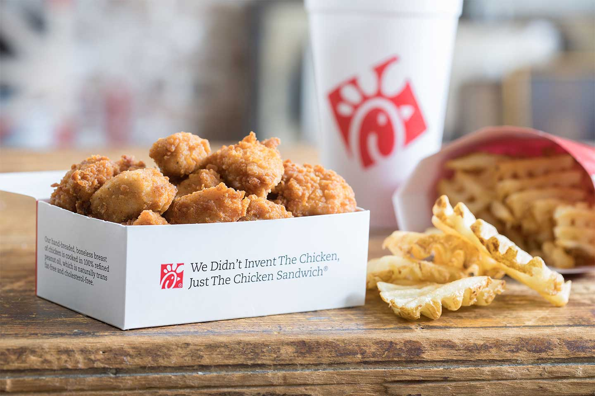
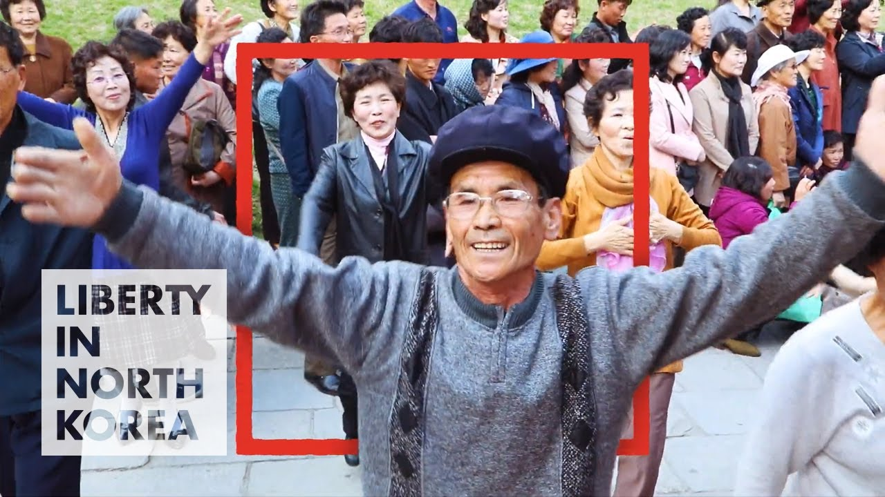
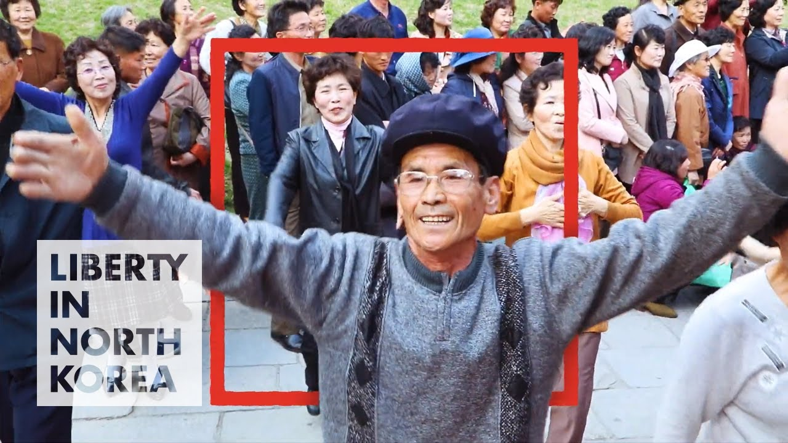

Evan Young Park
As a college freshman, my professional journey has been marked by diverse experiences that have shaped my work ethic, adaptability, and passion for learning. From my time at Chick-fil-A to my current role with Uber Eats, alongside my academic pursuits, I have gained invaluable insights into customer service, time management, and personal growth.
During senior year of high school, I embarked on my professional journey as a team member at Chick-fil-A. The fast-paced environment of the restaurant taught me the importance of efficiency, attention to detail, and exceptional customer service. Interacting with customers and ensuring their satisfaction became second nature, and I developed a keen ability to anticipate and meet their needs. Whether it was through taking orders, preparing meals, or maintaining a clean and welcoming environment, I recognized the impact that a positive and dedicated work ethic can have on creating a memorable experience for customers.
However, as I began my college journey, I sought new opportunities to expand my skill set and explore different industries. This led me to join Uber Eats as a delivery driver, where I have experienced a dynamic and flexible work environment. Working with Uber Eats has allowed me to embrace the gig economy, providing me with the freedom to create my own schedule and balance my work commitments with my academic responsibilities. As a delivery driver, I have honed my organizational skills, time management, and adaptability. Navigating through different neighborhoods, ensuring timely deliveries, and providing excellent customer service have been central to my role. This experience has further enhanced my ability to work independently, think critically, and solve problems on the go.
In conjunction with my professional experiences, my college education has been an essential component of my personal and professional growth. As a college freshman, I have eagerly pursued my studies, immersing myself in a range of subjects that align with my interests and career aspirations. Engaging in coursework, participating in class discussions, and collaborating with fellow students have not only deepened my knowledge but also refined my critical thinking and communication skills. Moreover, my professors' guidance and mentorship have played a pivotal role in shaping my academic journey and instilling in me a passion for continuous learning.
Balancing my professional commitments with my academic pursuits has undoubtedly presented challenges, but it has also allowed me to develop invaluable time management skills. Juggling work shifts, class schedules, and study time has taught me the importance of prioritization, discipline, and adaptability. I have come to appreciate the value of effective planning, setting realistic goals, and maintaining a proactive approach to ensure that I excel both in the classroom and in the workplace.
Additionally, my college experience has extended beyond the classroom, with involvement in extracurricular activities and student organizations. Engaging in clubs and campus events has broadened my horizons, facilitated networking opportunities, and enriched my overall college experience. Collaborating with diverse groups of individuals, organizing events, and assuming leadership roles have further enhanced my interpersonal skills, organizational abilities, and teamwork.
Experience
Delivery Driver
• Delivering for Uber Eats and Door Dash
• Experience with handling food and heavy items
• Customer Service
• Ability to navigate through cities and streets
Team Member
• Responsible for cleaning and preparing food orders in a timely order
• Food handlers card
• Exerpience in customer service
Fundraising
• Promoted fundraiser event
• Created and posted informative posts on social media
• Managed social media page
Education
University of California Riverside
Portfolio



